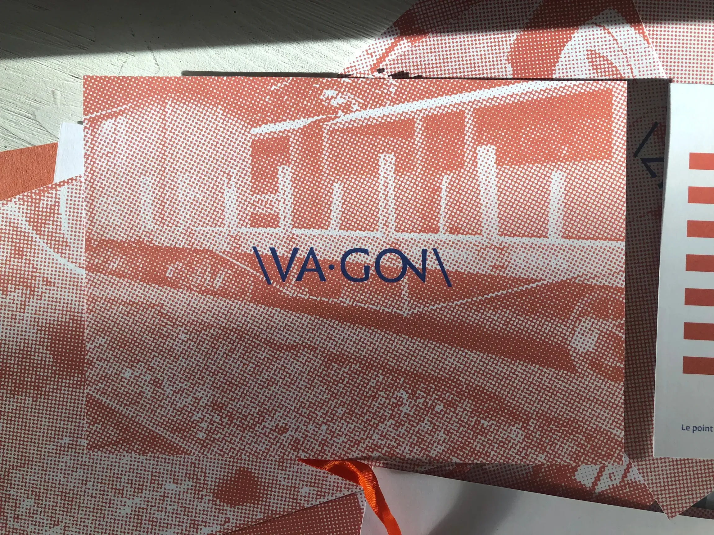
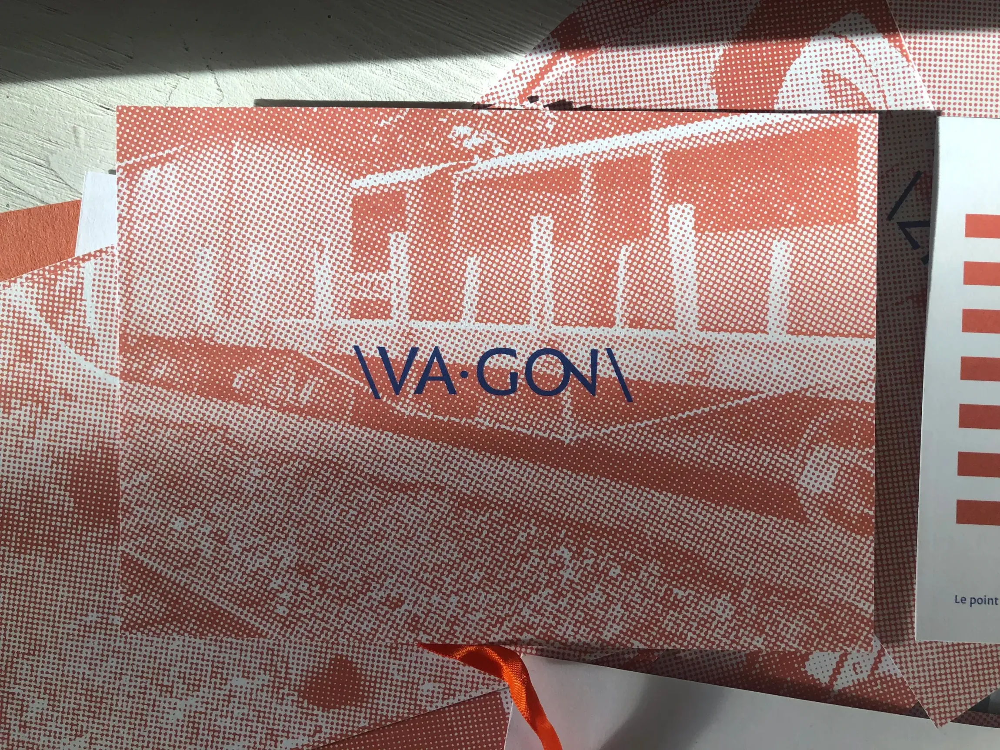

Infini
Typographic Specimen
edition 21 x 27 cm
27 card game
Created by Sandrine Nugue in 2014, responding to the CNAP's commission (national center of plastic arts), of an accessible character, retracing the history of writing with its cuneiform imprint. However, the character is inscribed over time with its large family of characters accompanied by pictograms and new ligatures. It is also on these last two character traits of the Infini that I relied to reinterpret the specimen, accompanied by a learning object around a rereading of phonetics. Indeed, the complex ligatures of the character lead the reader to see a unit, an image, a form, in a group of letters producing a sound. I decided to transpose these ligatures to a more accessible way of reading and pronouncing French, a task that I find particularly complicated.
 
